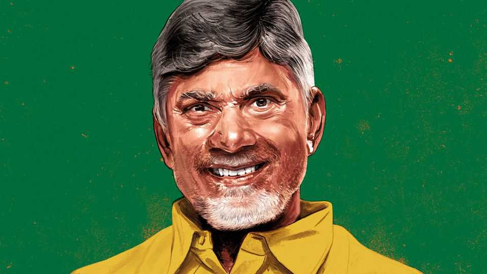
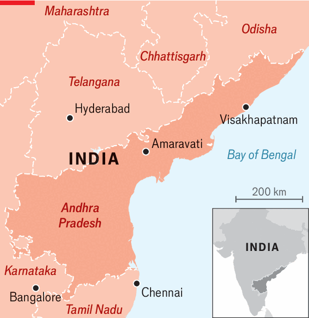
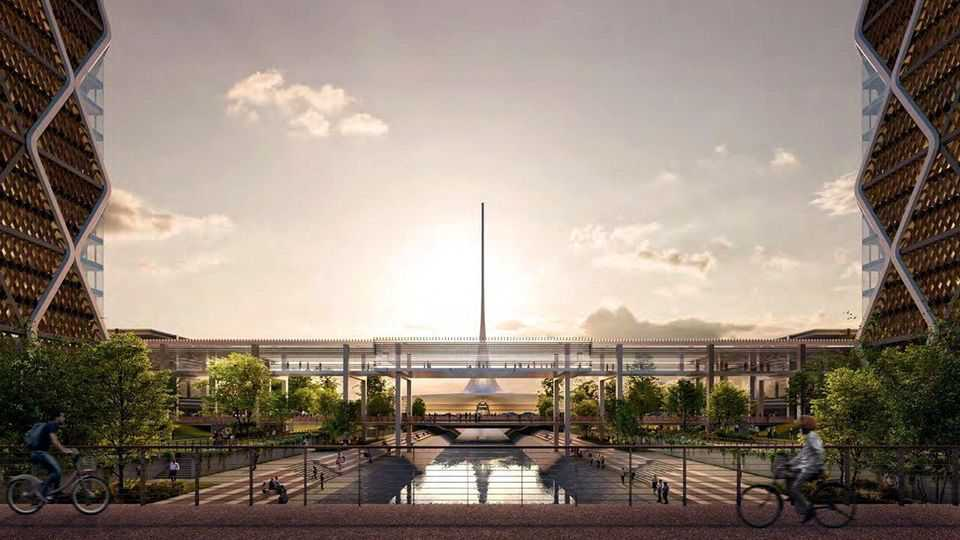

Chandrababu Naidu’s techno-utopian vision for his Indian state
Has Andhra Pradesh’s tech-savvy chief minister bitten off more than he can chew?

Sep 3rd 2026
As he tells the story, Chandrababu Naidu smiles. On becoming chief minister of Andhra Pradesh, a state on India’s east coast, in 1995, he saw “IT was the future” and headed to America. Initially Bill Gates refused to meet him, but Mr Naidu insisted. In 1998 Microsoft snubbed Bangalore to establish its Indian base in Hyderabad, then the state’s capital. Today the city has 10,000-plus Microsoft employees and a big airport, and has doubled in population. More than as an investor, Mr Naidu saw Mr Gates as a signal that would propel Hyderabad’s rise.
The story captures Mr Naidu’s public persona—a single-minded tech visionary, with a knack for wooing investors and a mission to improve Indian governance. He is still at it; after a turbulent career he is, at 76, two years into his fourth term. He was almost assassinated in 2003 and briefly imprisoned in 2023; twice voters booted him out. Most painful of all, in 2014 his state was cleft in two. Hyderabad, the crown jewel, became the capital of a new state, Telangana. Andhra Pradesh, still the size of Tunisia and with a population of 54m, was left as an agrarian rump without a capital or an economic engine.

A dizzying ambition was born. As chief minister of the rump state, Mr Naidu planned a shining new capital called Amaravati, the biggest greenfield city in India’s history, and among the biggest under way anywhere. And he formulated a new pitch for Andhra Pradesh, not as a rival to India’s software hubs, but as a magnet for advanced manufacturing, data centres and quantum computing. To further these goals, he has allied his regional party to Narendra Modi’s Bharatiya Janata Party (BJP), which rules in Delhi, supporting it as a coalition partner in exchange for financial backing.
At his office in Amaravati—next to the 33,000-acre site on which 25,000 workers are busy, night and day, turning his vision into reality—Mr Naidu tells The Economist that he is building the most beautiful city in India. The Singapore-inspired master plan features abundant water and greenery and miles of cycle lanes, designed around a grid system. He will have self-driving cars on the streets within five years, he predicts. Some 300 acres have been allocated for drone research and manufacturing, and he envisages 10,000 flights a year in short order, allowing residents to enjoy streets lined with trees and free from lorries.
Mr Naidu’s vision sounds utopian, but he argues it is rooted in reality. India has long lagged behind on hardware, but it is beginning to emerge as a hub for electronics manufacturing. Mr Naidu peppers the conversation with references to Chinese prowess, which India must emulate. For him factories, data centres and quantum computers in Andhra Pradesh will complement, rather than compete with, India’s startup and outsourcing hubs in Bangalore and Hyderabad.
Yet the task is daunting. In 1995 Hyderabad had a tech industry and 5m residents. Today Mr Naidu is trying to build a high-tech economic hub on some old banana groves. What’s more, his project is controversial and his state’s finances are in bad shape. In 2019 Mr Naidu lost power to YSR Congress, a rival regional party that deals in populist welfarism. It mothballed Amaravati for five years. To win back power in 2024, Mr Naidu had to promise to keep an array of expensive schemes in place, crimping resources for investment.

He has achieved impressive results. In the port of Visakhapatnam, Google broke ground in April on a 1GW AI data-centre project, much the biggest such scheme in India. The giant $15bn joint venture, involving Gautam Adani, one of India’s most powerful tycoons and a close ally of Mr Modi, is testimony to Mr Naidu’s political nous. It helps that he has made his state an easy place to do business. Steel, defence and aerospace companies are arriving, too.
In Amaravati Mr Naidu has again recruited anchor tenants—including IBM, a technology company—hoping others will follow. There are three universities and some 100,000 students living among the cranes and diggers. Already the outlines of sumptuous civic buildings rise from the marshland. Work is under way on 95 sites in all. “This is where the supercomputer will go!” shouts one excited foreman, above the din of activity.
In a country blighted by mediocre administrators, Mr Naidu’s audacity can feel like a breath of fresh air. Even so, he may have bitten off more than he can chew. One criticism is that Amaravati is an over-ambitious vanity project, and could become a financial millstone for the state. “He’s trying to punch above his weight,” says Parakala Prabhakar, a political economist. The bulk of the financing for the city is $1.6bn in long-term loans from the World Bank and the Asian Development Bank, which will be paid back by selling off land. The maths relies on land prices soaring, which in turn depends on the city attracting foreign investors, at a time when India as a whole is struggling to do this.
“These projects always look like utopias in expensive 3D renderings,” says Sarah Moser of McGill University, who has compiled a database of 300 greenfield cities worldwide. Many end up half-empty, some as ghost cities. As perspicacious as their progenitors may be, they struggle to bend economic geography to their will. Political winds change quickly. Consider King Abdullah Economic City, a vast project in the Saudi desert, gathering dust since the death of its namesake in 2015.
Amaravati’s fortunes rest on a delicate political balance. If Mr Naidu loses power, his opponents would have different priorities. For now he has the clout to push it forward because the BJP holds power nationally but is short of a parliamentary majority. That could change. Mr Naidu says he is with Mr Modi for the long haul, as they are “on the same wavelength” about development (and the opposition alliance remains “impractical”). But he admits that recent youth protests are a “concern for us all”.
A final doubt is whether Amaravati can really become “Quantum Valley”. Even as investment pours into AI, many experts think that quantum computers will have a complementary role, partly by performing some tasks more efficiently than large language models. Mr Naidu wants Amaravati to manufacture components. But the technology is years from commercialisation. And it is not clear which quantum technology will win (IBM specialises in one, which brings a risk of lock-in). Though quantum could be a good long-term bet, it is unlikely to yield investment and jobs quickly.
As with Hyderabad, Mr Naidu hopes that his truncated state will rise by gaining an early advantage in nascent technologies. In time he hopes to pass down power to his son, Nara Lokesh, now his technology minister. But he is not thinking of retiring soon. “Always,” he says, “one should be looking forward.” ■
Stay on top of our India coverage by signing up to Essential India, our free weekly newsletter.